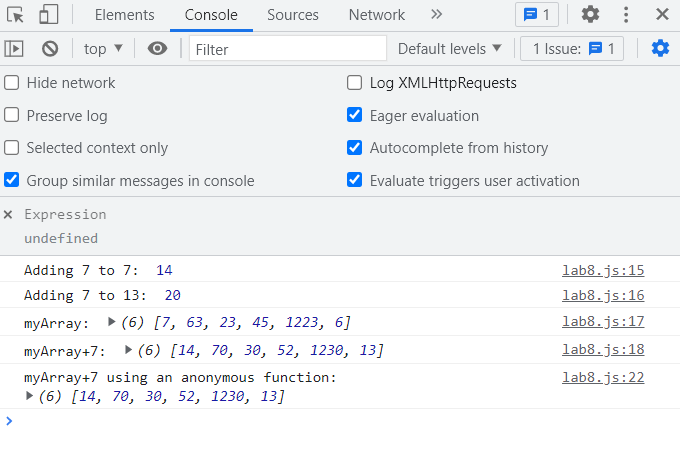

Lab 8- Anon Functions and Callbacks
By Ryan McCarty and Darren Yang
Challenge
Our challenge for this lab was to practice both anonymous functions and functions that took callbacks. The function we created takes any number and adds seven to it, and was made using both callbacks and as an anonymous function.
Problems
Some problems we faced were occasionally running into coding errors due to mistyping, but quick spelling and syntax fixes solved those.
Results
You can check the output in the console, and there is also an image below of the console results! :)
